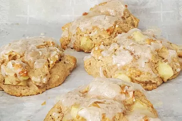

Baked Apple Fritters

- Prep Time: 15 mins
- Cook Time: 13 mins
- Total Time: 28 mins
- Servings: 10
- Yield: 10 apple fritters
Ingredients
- 1 1/2 cups all-purpose flour, sifted
- 1/2 cup packed light brown sugar
- 2 teaspoons baking powder
- 1 teaspoon ground cinnamon
- 1 teaspoon ground nutmeg
- 1 pinch salt
- 6 tablespoons cold unsalted butter
- 1/2 cup whole milk
- 1 large egg
- 1 teaspoon vanilla extract
- 1 cup chopped Honeycrisp apple
- 1 cup confectioners' sugar
- 2 tablespoons whole milk
- 1 teaspoon vanilla extract
Directions
- Preheat the oven to 400 degrees F (200 degrees C). Line a baking sheet with parchment paper.
- Whisk together all-purpose flour, brown sugar, baking powder, cinnamon, nutmeg, and salt in a
large bowl. Cut in butter with a pastry blender until mixture resembles coarse crumbs.
- Whisk milk, egg, and vanilla extract together in a cup. Stir into flour mixture just until combined;
stir in chopped apple. Use a scoop or spoon to drop 1/4-cup mounds onto prepared baking sheet.
- Bake in the preheated oven until a skewer inserted near the center of fritter comes out clean, 11
to 12 minutes. Remove to a wire rack.
- Preheat the oven’s broiler. Whisk together confectioner's sugar, milk, and vanilla extract.
Brush a thin layer of glaze over fritters, and place under broiler.
- Broil fritters until glaze is bubbly, about 2 minutes.
Go back home